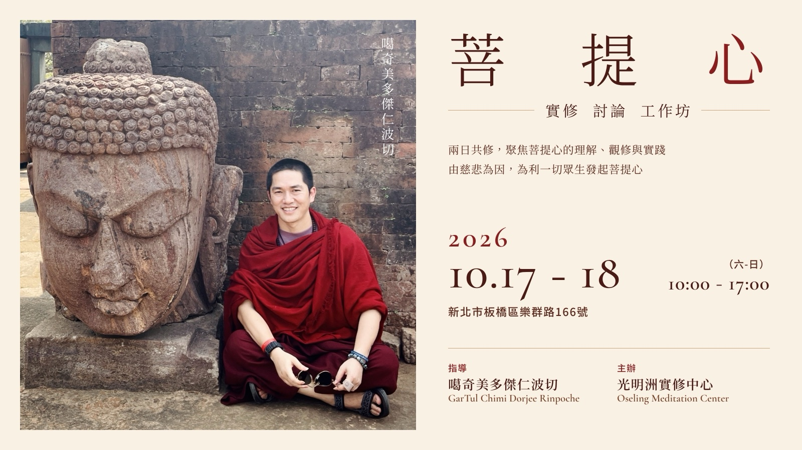

Bodhicitta | Practice & Discussion Workshop（CHT–ENG）
經過慈心與悲心的薰習，這一次，讓我們更進一步走近菩提心。
兩日共修將從學員共同閱讀、討論開始，再由噶奇美多傑仁波切深入引導法義、傳授實修要訣，並帶領大家實際觀修，讓聞思逐漸轉化為內心的體會與實踐。
| 日期 | 2026/10/17（六）–10/18（日） |
|---|---|
| 時間 | 每日 10:00–17:00 |
| 地點 | 新北市板橋區樂群路166號 |
| 指導 | 噶奇美多傑仁波切 |
| 主辦 | 光明洲實修中心 |
| 報名截止 | 2026/10/16（五）中午 12:00 |
歡迎法友一同聞思、討論與實修，在修習中逐步培養菩提心。🙏
光明洲實修中心
新北市板橋區樂群路１６６號
台北捷運：台北捷運板南線亞東醫院站２號出口，距離約 900 公尺，步行路程約 13 ～15 分鐘。
台鐵：台鐵浮洲站約 1.1 公里，步行約 15 分鐘。
鄰近停車場：板橋區合宜路 77 號旁 地下停車場，B1 臨停停車場，每小時收費 30元。
報名請填寫下列表單。
報名截止：2026/10/16（五）中午 12:00
將於課前寄發通知，請留意所留電子信箱。
若下方表單顯示不完整，請點上方按鈕以新分頁開啟。
Having cultivated loving-kindness and compassion, we now take another step toward bodhicitta.
Over these two days, we will begin with group reading and discussion, followed by in-depth guidance from GarTul Chimi Dorjee Rinpoche. Rinpoche will share essential instructions and lead us through guided meditation practice, helping us bring our understanding into direct experience.
| Date | October 17–18, 2026 (Sat–Sun) |
|---|---|
| Time | 10:00 AM–5:00 PM daily |
| Venue | No. 166, Lequn Rd., Banqiao District, New Taipei City, Taiwan |
| Teacher | GarTul Chimi Dorjee Rinpoche |
| Organizer | Oseling Meditation Center |
| Registration | Closes at 12:00 PM, October 16, 2026 (Fri) |
The Bodhicaryavatara (A Guide to the Bodhisattva’s Way of Life)
The Jewel Ornament of Liberation
We warmly welcome everyone to join us in study, reflection, discussion, and practice as we gradually deepen our cultivation of bodhicitta. 🙏